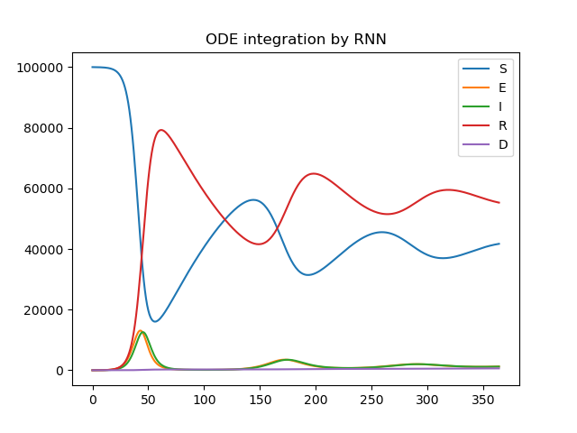
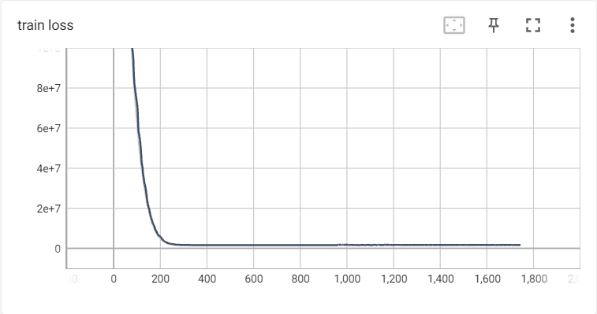
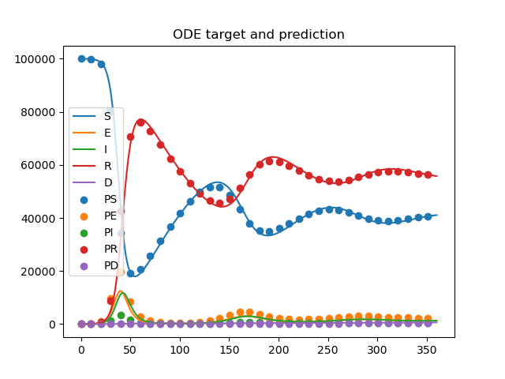

一、前言
前一段时间接触常微分方程组拟合的时候，发现了使用 RNN 求解常微分方程组的办法。感觉很有意思，于是记录一下。
参考：
二、常微分方程组和欧拉法
所谓常微分方程，指的是只具有单一自变量的微分方程，如假设加速度 $a$ 一定，则速度 $v$ 满足微分方程
$$ \frac{dv}{dt} = a $$速度 $v$ 只与时间 $t$ 有关，那么该微分方程即常微分方程。与之对应的是偏微分方程，不过不在本文的讨论范围内。
类似的，路程 $s$ 也满足微分方程
$$ \frac{ds}{dt} = v $$那么关于 $v, s$ 的两个常微分方程就可以组成常微分方程组
$$ \begin{cases} \frac{dv}{dt} = a \\ \frac{ds}{dt} = v \end{cases} $$虽然上面的方程组很容易求出解析解，但许多常微分方程组却难以找到解析解，甚至解析解根本不存在。这种情况就需要求出数值解。
还举上面那个简单的物理问题为例，我们设 $t$ 时刻速度和路程为 $v_t, s_t$，那么可以令
$$ \begin{cases} v_{t_m} &= v_{t_{m-1}} + a \Delta t \\ s_{t_m} &= s_{t_{m-1}} + v_{t_m} \Delta t \end{cases} $$其中 $t_{m-1} < t_{m}, \Delta t = t_{m} - t_{m-1}$，这样就近似得到了速度和路程随时间变化的数值解。此种方法也是游戏物理引擎中进行运动学模拟的基本方法。因为是欧拉发明的，所以也叫做欧拉法。
更一般的，考虑函数 $y(t)$，有微分方程
$$ \frac{dy(t)}{dt} = f(y(t), t) $$现在我们希望求得 $y(t)$ 的解析解，即一组点 $\{(t_i, y(t_i))\}$。
我们对 $y(t)$ 在 $t_m$ 点做泰勒展开，得到
$$ y(t) = y(t_m) + f(y(t_m), t_m)(t - t_m) + O(t) $$忽略无穷小量 $O(t)$，则 $t = t_{m+1}$ 时的解近似为
$$ y(t_{m+1}) = y(t_m) + f(y(t_m), t_m) \Delta t $$其中 $\Delta t = t_{m+1} - t_{m}$，这样我们就得到了一般的求得常微分方程数值解的方法。
三、使用 RNN 表示常微分方程组
RNN 就是深度学习里的循环神经网络，具体概念就不介绍了。RNN 可以表示成如下的数学形式
$$ y_t = g(y_{t-1}, x_t, t) $$我们可以对上一小节中得到的欧拉法方程做改造，令 $\forall m, t_{m+1} = t_{m} + 1$，那么原式可以改写为
$$ y_t = y_{t-1} + f(y_{t-1}, t-1) $$因为等式右侧是关于 $y_{t-1}$ 和 $t$ 的表达式，所以可以令 $g(y_{t-1}, x_t, t) = y_{t-1} + f(y_{t-1}, t-1)$。
这样我们的 RNN 就等同于欧拉法了，因此同样可以用于常微分方程组的求解。
四、RNN 求解常微分方程组
我们考虑这样一个传染病模型
人群分为易感者、暴露者、患病者、康复者、死者五类人群。考虑潜伏期、重复感染和死亡的情况。
总人数为 $N$，$t$ 时刻各类人群数量为 $S, E, I, R, D$。设 $\beta$ 为日接触率，$\sigma$ 为日发病率，$\gamma$ 为日治愈率，$\alpha$ 为日死亡率，$\omega$ 为日免疫消失率。则 $S, E, I, R, D$ 满足如下方程组
$$ \begin{cases} \frac{dS}{dt} &= \omega R - \beta \frac{IS}{N} \\ \frac{dE}{dt} &= \beta \frac{IS}{N} - \sigma E \\ \frac{dI}{dt} &= \sigma E - \gamma I - \alpha I \\ \frac{dR}{dt} &= \gamma I - \omega R \\ \frac{dD}{dt} &= \alpha I \\ N &= S + E + I + R + D \end{cases} $$似乎很是复杂……我们现在就要用 RNN 求解该常微分方程组。
这是我在数学建模作业中用到的模型，也是为了求解该模型，才了解到 RNN 求解常微分方程的方法的。
现在让我们用 pytorch 建立该微分方程的网络模型 SEIRSD。在初始化函数中需要设定 weights 用来表示参数 $\beta, \sigma, \gamma, \alpha, \omega$。
class SEIRSD(nn.Module):
def __init__(self, steps, h, params):
super().__init__()
self.steps = steps
self.h = h
# beta, sigma, gamma, alpha, omega
self.weights = nn.Parameter(
params,
requires_grad=True,
)
随后编写前向传播函数，该函数传入初始值 $y_0$，输出 steps 步数内的所有 $y_i$ 值，这里 $y$ 是向量 $[S, E, I, R, D]$
def forward(self, init):
state = init # (5)
states = []
for step in range(self.steps):
state = self.step_do(state) # (5)
states.append(state)
states = torch.stack(states, dim=0) # (step, 5)
return states
其中用到了函数 step_do 用于计算每一步的状态。这里我们使用欧拉法，根据微分方程组计算 $g(y_{t-1}, x_t, t)$ 的结果并更新，求得下一个时间步的状态。
def step_do(self, state):
x = state # (5) -> S, E, I, R, D
beta, sigma, gamma, alpha, omega = (
self.weights[0], self.weights[1], self.weights[2],
self.weights[3], self.weights[4]
)
S, E, I, R, D = x
N = x.sum()
dS = omega * R - beta * (I * S) / N
dE = beta * (I * S) / N - sigma * E
dI = sigma * E - gamma * I - alpha * I
dR = gamma * I - omega * R
dD = alpha * I
dS = dS.reshape(1)
dE = dE.reshape(1)
dI = dI.reshape(1)
dR = dR.reshape(1)
dD = dD.reshape(1)
dx = torch.cat((dS, dE, dI, dR, dD), dim=0)
step_state = x + self.h * torch.clamp(dx, -1e5, 1e5) # (5)
return step_state
之后我们定义函数 odeint 用于计算常微分方程组，
def odeint(y0, steps, params):
model = SEIRSD(steps, 1, params).to(device)
with torch.no_grad():
result = model(y0)
return result.numpy()
设定初始状态
$$ \begin{align*} y_0 =& [100000, 10, 0, 0, 0] \\ \beta =& 1 \\ \sigma =& 0.4 \\ \gamma =& 0.4 \\ \alpha =& 0.001 \\ \omega =& 0.01 \end{align*} $$求解常微分方程组，并画出图像
if __name__ == '__main__':
y0 = torch.tensor([100000, 10, 0, 0, 0])
steps = 365
params = torch.tensor([1, 0.4, 0.4, 0.001, 0.01])
result = odeint(y0, steps, params)
steps = np.arange(365)
plt.plot(steps, result[:, 0], label="S")
plt.plot(steps, result[:, 1], label="E")
plt.plot(steps, result[:, 2], label="I")
plt.plot(steps, result[:, 3], label="R")
plt.plot(steps, result[:, 4], label="D")
plt.legend()
plt.show()

另外我们使用 scipy 库同样求解该微分方程组
def ode(ini, t, beta, sigma, gamma, alpha, omega):
N = ini.sum()
S, E, I, R, D = ini
dS = omega * R - beta * I * S / N
dE = beta * I * S / N - sigma * E
dI = sigma * E - gamma * I - alpha * I
dR = gamma * I - omega * R
dD = alpha * I
return [dS, dE, dI, dR, dD]
beta = 1
sigma = 0.4
gamma = 0.4
alpha = 0.001
omega = 0.01
t = np.linspace(0, 360, 360)
result = odeint(ode, y0=[100000, 10, 0, 0, 0], t=t, args=(beta, sigma, gamma, alpha, omega))
# print(result[:, 0])
plt.plot(t, result[:, 0], label='S')
plt.plot(t, result[:, 1], label='E')
plt.plot(t, result[:, 2], label='I')
plt.plot(t, result[:, 3], label='R')
plt.plot(t, result[:, 4], label='D')
plt.legend()
plt.show()
得到的图像如下所示
可以看出两者差别不大。当然 scipy 中的 odeint 函数采用了精度更高的 lsoda 算法，得到的图像应该更加准确。
五、RNN 拟合常微分方程组
RNN 在常微分方程组中的作用不至于求出数值解而已，如果只是根据提供的参数进行计算的话，不使用 pytorch 也可以实现欧拉法。然而不要忘了深度学习中的反向传播这样一个利器。对于 RNN，我们能做到的是根据提供的数据进行拟合，反向得到可能的参数。
首先我们创建要进行拟合的数据集
beta = 1
sigma = 0.4
gamma = 0.4
alpha = 0.001
omega = 0.01
t = np.linspace(0, 360, 360)
result = odeint(ode, y0=[100000, 10, 0, 0, 0], t=t, args=(beta, sigma, gamma, alpha, omega))
np.save("./data.npy", result)
接着编写模型的训练代码。设定初始参数为 [5, 0.5, 0.5, 0.05, 0.05]，训练步数 2000 步。
device = torch.device('cuda' if torch.cuda.is_available() else 'cpu')
writer = SummaryWriter("/content/logs")
if __name__ == '__main__':
y0 = torch.tensor([100000, 10, 0, 0, 0]).to(device)
steps = 360
target = torch.tensor(np.load("data.npy"), dtype=torch.float).to(device)
criterion = torch.nn.MSELoss().to(device)
model = SEIRSD(steps, 1, torch.tensor([5, 0.5, 0.5, 0.05, 0.05], dtype=torch.float).to(device)).to(device)
optimizer = Adam(model.parameters(), lr=8e-3)
bar = tqdm(range(2000))
for epoch in bar:
outputs = model(y0)
loss = criterion(outputs, target)
optimizer.zero_grad()
loss.backward()
optimizer.step()
bar.set_postfix(loss=loss.item(), weights=model.weights.data)
writer.add_scalar("train loss", loss.item(), epoch)
if epoch % 100 == 0:
torch.save(model.state_dict(), f"/content/checkpoints/checkpoint{int(epoch / 1000)}.pth")
进行训练，损失不断下降

得到训练后的参数为
| $\beta$ | $\sigma$ | $ \gamma$ | $ \alpha$ | $ \omega$ |
|---|---|---|---|---|
| 3.4432e+00 | 2.2585e-01 | 1.3888e+00 | 1.9691e-03 | 1.0094e-02 |
得到的参数似乎和我们最初设定的参数不同，但是如果我们画出图像，就会发现该参数对应的图像同样反映了真实数据的变化趋势，有效地拟合了数据
